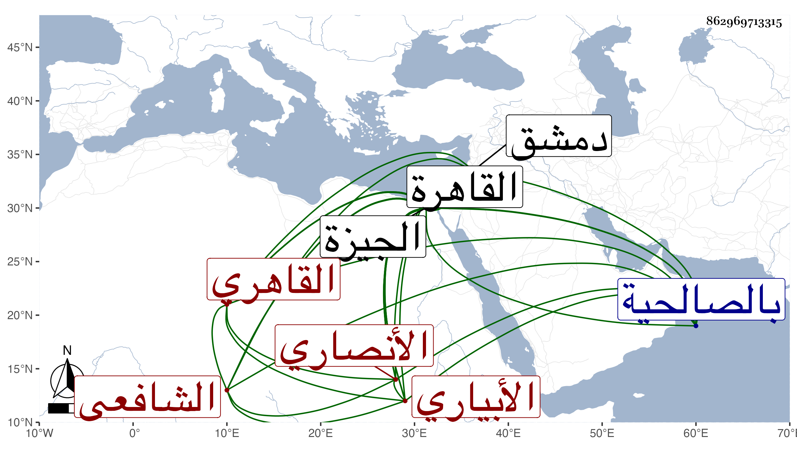

0902Sakhawi.DawLamic.ITO20230111-ara1.EIS1600.862969713315
Biography ID: 862969713315
1051
محمد بن أحمد بن عبد العزيز بن عثمان البدر أبو محمد الأنصاري الأبياري ثم القاهري الشافعي والد أحمد وعبد الرحمن وغيرهما ممن تقدم ويأتي وكذا مضى ذكر أبيه مع التعرض فيه لوفاة جده ، ويعرف بابن الأمانة لقب جد أبيه . ولد كما بخط والده في سادس صفر سنة ست وستين وسبعمائة بابيار ونشأ بها فحفظ القرآن ثم تفرس فيه أبوه النجابة فقدم به القاهرة وهو ابن عشر للاشتغال وسكنا بقاعة إمامة الصالحية النجمية وحفظ التنبيه والشاطبيتين وغيرهما وعرض على جماعة وأقبل على التحصيل فتفقه بالعز عبد العزيز بن عبد المحيي الأسيوطي ولازمه حتى أذن له بالإفتاء وذلك في سنة أربع وثمانين وكذا لازم البلقيني وابن الملقن في الفقه وغيره ، ومما قرأه على أولهما فروع ابن الحداد وانتفع بالزين العراقي في الحديث وبالشمس الغماري والمحب بن هشام في العربية وبسرجان المغربي الأكول في الفرائض وكذا أخذ الفرائض مع الحساب وطرف من الفقه أيضا عن والده وبآخرين في الأصول ، ومن شيوخه في الدراية بل والرواية أيضا الصدر السويفي الشافعي والمجد إسماعيل الحنفي القاضي وقرأ عليه المقامات الحريرية في مجالس آخرها في سنة ثمان وثمانين وتلا للسبع على الفخر عثمان البلبيسي مع قراءته للشاطبيتين عليه وانتهى ذلك في رمضان سنة اثنتين وثمانمائة ، وأذن له في الإقراء وكتب له الإجازة عنه الشرف عبد المنعم البغدادي الحنبلي وقال فيها إنه كان قد هذب نفسه بفنون المعارف وتفيأ من العلوم الشرعية كل ظل وارف واقتصر على الفتوى ونشر العلم فلم يكن له إلى سواهما باعث ولاعن حماه صارف ، وبرع في العلوم والفضائل وشهد بفضائله الأفاضل والأماثل وناظر النظراء فكان أنظرهم وشارك في العلوم العلماء فكان أنضرهم وجمع إلى الفروع أصولا وإلى المنقول معقولا واجتهد فأثمر اجتهاده وعلق بمحبة العلم فؤاده وسمع مناقبه الشريفة ولمح هذه المراتب المنيفة وتحقق أن بساحة العلوم تلتقي أطراف معاني الفضائل وبفنائه تنتظم عقود مناصب الوسائل وأنه حجة الله العليا ومحجته العظمى وموروث النبوة ومنصب الرسالة قضاء وحكما وتيقن أن كتاب الله العزيز متنوع العلوم ومنشؤها ومفتاح الفوائد ومبدؤها بادر إلى طلب علومه مبادرة السيل الجاري وانقض إلى تحصيل فنونه انقضاض الكوكب الساري إلى آخر ما كتبه ووصفه بالشيخ الإمام العالم العلامة والبحر الفهامة فخر العلماء وصدر الفقهاء جمال المدرسين بقية المصدرين مفتى المسلمين . وأثنى عليه أبيه وجده وقال :
| سقى الغمام ضريحا ضم أعظمهم | حتى تقلده من دره دررا |
| ودبجت راحة الأنواء تربتهم | وأطلعت زهرها في أفقه زهرا |
وشهد على المجيز بالإذن وكذا شهد عليه الزين عبد الرحمن الفارسكوري ووصفه بالشيخ الإمام العلامة مفيد الطالبين صدر المدرسين مفتي المسلمين بدر الدين . قال : وهو بحمد الله بذلك أي بالمداومة على الشغل والاشغال حري وبحمل أعبائه ملي مع ما ضم إليه من فروع الفقه وأصوله والتفنن في منقوله ومعقوله حتى عد ذلك من حاصله ومحصوله فليحمد الله على هذه النعمة منتصبا لإفادة الطالبين بأعلى همة . والشمس الزراتيتي وقال إن الفخر كان يقول في الدرس : نحن نستفيد من الشيخ بدر الدين وسمع الحديث على الجمال عبد الله الباجي والسراج الكومي وجويرية وابن أبي المجد التنوخي والهيثمي وطائفة ، ومن مسموعه على الأول كتاب الأربعين لمحمد بن أسلم الطوسي وعلى الثاني الرسالة للشافعي ولم يزل يدأب حتى تقدم وناب في القضاء في سنة خمس وثمانمائة بعد أن وقع على الحكام بالصالحية مدة مع أنه عرض عليه النيابة قبلها فأبى إلى أن اتفق جلوس بعضهم مع نقصه فوقه محتجا بكونه قاضيا فكان ذلك باعثا له على القبول ، وأضيف إليه قضاء الجيزة مدة وغيرها كالبرلس والقليوبية في أوقات مختلفة ، وكذا ناب في تدريس الفقه بالشيخونية عن الشهاب بن المحمرة ثم استقل به في شعبان سنة ثلاث وثلاثين حين رام بعضهم الوثوب عليه وقد فيه سيما وقد أقام الشهاب على قضاء دمشق ولم يلبث أن جاء فما نازعه البدر في عوده له ودرس أيضا الفقه بالتنكزية والمجدية والكهارية والحاكم مع التفسير به أيضا والحديث بالمنصورية والمنكوتمرية وتصدر بجامع عمر وإلى غير ذلك ، وحج قبل موته بقليل وتصدى للتدريس والإفتاء والأحكام وصار أحد الأعيان وحدث بالرسالة للشافعي وغيرها سمع عليه الأئمة وأثنى عليه المقريزي في تاريخه وابن قاضي شهبة وسمى جده عبد الغني غلطا وكان علامة بارعا في الفقه وأصوله وغيرهما ذكيا متقنا لما يعلمه حسن المحاضرة والمذاكرة كثير الاستحضار لاسيما للفقه عارفا بالأحكام وله نوادر لطيفة مع وقفة في لسانه تعيقه عن سرعة الكلام سيما في الأحكام والمباحث ورأيت من قال إنه كان يهزأ به من أجلها ، وقد أثبت شيخنا اسمه فيمن سمع عليه في عشاريات الصحابة من أماليه ووصفه بالشيخ الإمام العلامة مفيد الجماعة ولما رغب له عن تدريس الحديث بالمنصورية وللشهاب بن المحمرة عن تدريس الفقه بالشيخونية وقال الناس : إنه لو عكس كان أولى ، قال شيخنا : إنما أردت انتشار كفاءة كل من الرجلين فيما لم يشتهر به وناهيك بهذا من مثله . وقال في إنبائه أنه كان في آخر عمره كبير النواب مع قلة الشر وحسن المحاضرة والمذاكرة واستحضار كثير من أخبار القضاة الذين أدركهم وماجرياتهم ونوادر ظريفة وأنجب أولادا . مات فجأة في ليلة الثلاثاء سابع عشر شعبان سنة تسع وثلاثين بالقاهرة وشكوا في وفاته وكثرت في ذلك الأقاويل واضطربت فيه الآراء فأخر حتى دفن قرب ظهر يوم الأربعاء رحمه الله وإيانا ومن نظمه في الجمال الاستادار مما أثبته بعضهم في ترجمته :
| وقائلة هل في كافة مصرنا | أمير به يعطى الجزيل ويعسف |
| فقلت لها حقا تقولين هكذا | وفيها جمال الدين ذو العقل يوسف |
وأثبت في ترجمته في معجمي بعضا من فوائده .
